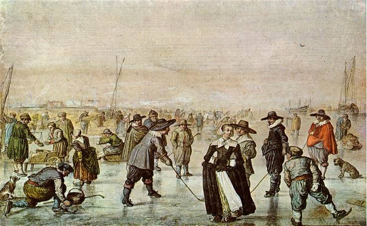
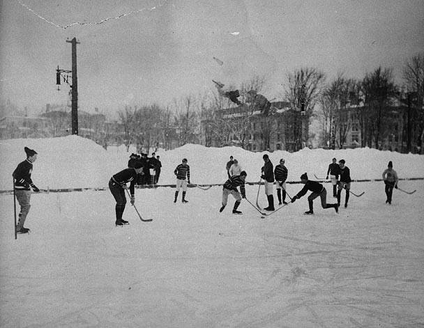
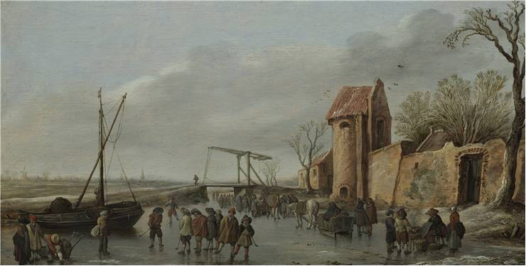

History of Hockey
| Home |
| History of Hockey |
| Leagues |
| Play of the Game |
| Map of NHL Stadiums |
| References |
| Contact me |
Today we are familiar with several of hockey forms, including field hockey, ice hockey, roller hockey and indoor hockey. The most popular one is ice hockey, especially in Canada. Regardless of the forms, hockey is a team sport in which two teams play against each other by controlling a ball or a puck trying to get it into the opponent’s goal. All players use hockey sticks during a game.
It is impossible to claim the exact time of the birth of hockey. We will probably never know for sure, but there are records of people participating in this kind of game about 4000 years ago. Since ball-stick games are as old as our civilization, the earliest origins may be from China, Persia or Egypt. Archeologists discovered that an early form of the ball-and-stick game was played in Greece the 5th century BC. At the time when Europeans sailed across the Atlantic and started settling North America, they discovered that Native Indian people had their games which were precursors of lacrosse. Furthermore, some museums today showcase evidence that hockey was played by Aztecs centuries before Columbus even discovered the New World.

The name “hockey” is thought to be derived from the French hoquet meaning “shepherd’s stave”, however, there are a couple of suppositions of which none have been evidenced. The second supposition derives from the use of cork bangs, called stoppers, in place of wooden balls to play the game. These objects came from barrels containing hock ale, also known as hocky. Still, though, the origin of “hockey” remains unclear.
J. G. Creighton was the Canadian from Halifax, Nova Scotia who created the first set of rules of ice hockey about 140 years ago. Upon arriving in Montreal, he presented hockey sticks and skates which were patented by Nova Scotia company in 1866. The skates featured rounded blades held onto boots by metal clamps, which had not been seen ever before. The very first game of ice hockey played in Canada was in 1875 at Victoria Skating Rink, in which the new rules were implemented. Just a couple of years later, Mr. Creighton’s rules were revised at McGill University in Montreal. Eventually, it was decided that the game would be held indoors for the first time, due to the belief that ice hockey had to be played on ponds only. Otherwise, people could get badly hurt. Creighton handled the issue by creating a flat and circular piece of wood, that is the first hockey puck. It provided players with better control over a ball, and it decreased the chance of injuring spectators during a game.
Ice hockey is Canada’s national winter sport. The country undoubtedly contributed to this sport more than any other so we could say this their tendency to regard ice hockey as their national sport is entirely justified. The national hockey league of North America, called NHL is the highest level for men’s hockey and thus the most popular. In Russia and the most of Europe, the highest league is called Kontinental Hockey League. The formal governing body of International ice hockey is the International Ice Hockey Federation.
The modern game was formed in the middle of 19th century by British soldiers stationed in Canada. During the next 30 years, many leagues and amateur clubs were organized in Canada. By the beginning of the 20th century, ice hockey spread to England and the rest of European countries. Today, the sport is highly popular in Eastern Europe and North America.
Soft hockey has been played in the ancient period by different nations and under different names. It is known that over the last five hundred years the sport has been widely played in India and in rural areas of undeveloped parts of the world where the lack of proper infrastructure eliminates the probability for playing field hockey. In the past, villagers were mixing the bamboo and homemade rubber to make softballs. One of the reasons the sport enjoyed such a popularity was that it didn’t require many players and the equipment for the game was very simple. One of the more advantageous sides of softball was smaller chances of sustaining injuries, compared to other similar games. The game was played by pushing the ball instead of hitting it, to avoid sending the ball out of the field and into bushes and ponds, which would lead to a longer recovering from the ball. Over the last couple of centuries, the sport has been modified and developed into other separate sports like croquet, lacrosse, shinty, field hockey, etc. According to sources, the countries which mostly contributed to the development of hockey were Great Britain and France, where field hockey remains to be a popular summer sport. During cold, harsh winters in Europe, it was not uncommon to see young athletes play the version of this sport on ice. In the 17th century, the game started becoming popular in Holland and then later on it started to take hold in England as well.
The first Olympic Hockey Competition for men took place in London in 1908 where all of the United Kingdom countries were competing separately. Another two countries which participated as well were Germany and France. However, after London Olympics, the game was dropped from 1912 games held in Stockholm due to the preferences of other ‘optional sports’ by the host country. Several years later, in 1920, the ice hockey reappeared in Antwerp but was again neglected in Paris in 1924, despite the formation of the International Hockey Federation that same year. Ultimately, hockey was granted re-entry in Amsterdam in 1928 and has been on the program ever since. As for the women’s hockey, the first time it was included in the Olympic program was in Moscow in 1980.

Since the Olympics held in Sydney (2000), men athletes have competed in 12-team tournaments and women in a 10-team one.
Another hockey sport, which was played for the first time in the city of Kent, England at the beginning of the 20th century, is called “roller skate hockey”. Apart from several European countries, the sport presently enjoys popularity in South America, Angola, and Mozambique. The International Federation of roller skate hockey was created in 1924. The sport may be played on roller skates or roller blades. Two teams comprise of six players each, so it closely resembles ice hockey. However, it is played on asphalt or an indoor skating rink with a ball. The minimum size of the playing area is minimally set to be 65 x 35 feet while the maximum size is 100 x 200 feet. Same as indoor hockey, the game starts with a face-off after a coin is tossed. The players’ positions are a goalie, two forwards, center and two defenders. All players wear matching jerseys, as well as a face mask, shin guards, hockey gloves and helmets with a chin strap. They may also use a mouthpiece, but it is optional.
Indoor hockey is very similar to field hockey but only adapted for indoor play. However, the same playing style can be applied outdoors if the surface is flat, hard and asphalted. Each team is created out of six players, and the game has two periods of 20 minutes. One of the rules of the game is that the ball must only be pushed and not hit with the stick. Additionally, the ball may just rise from the surface while attempting to score a goal from the striking circle. The game starts with a lateral pass from the team which loses a toss-up.
